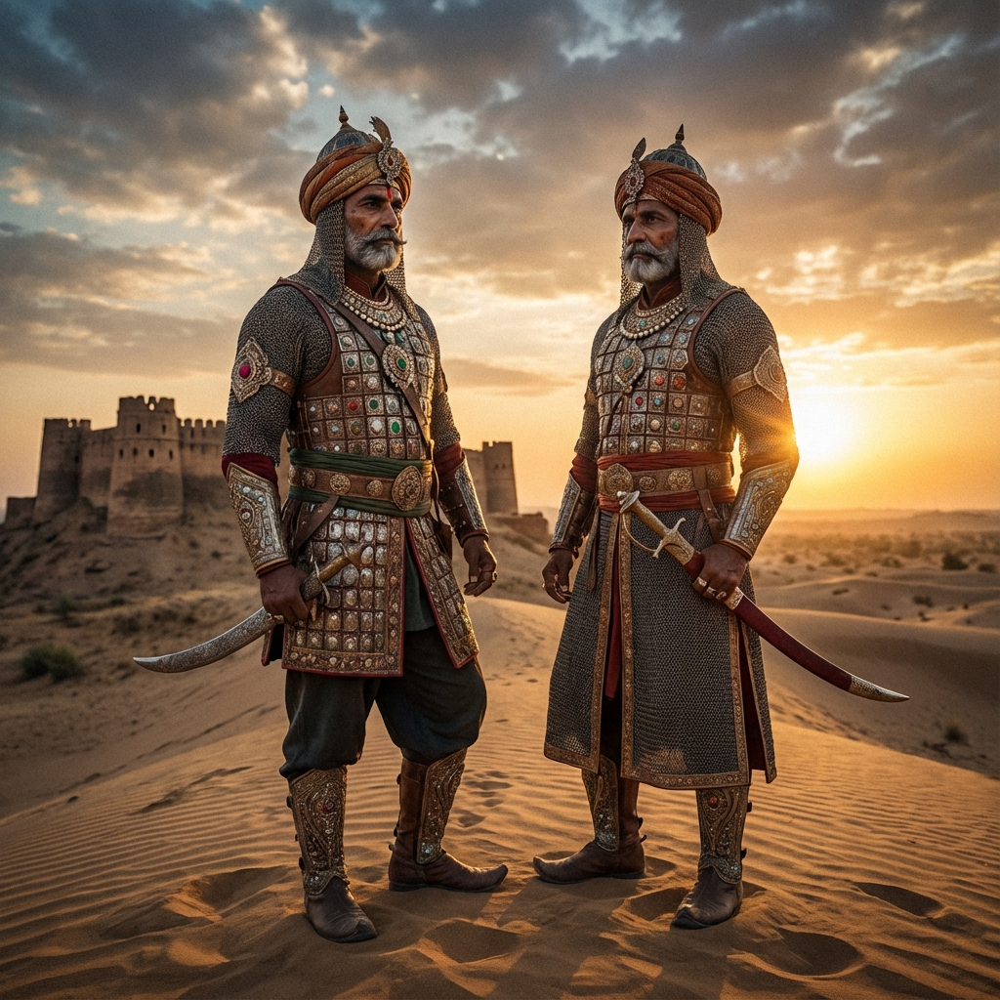
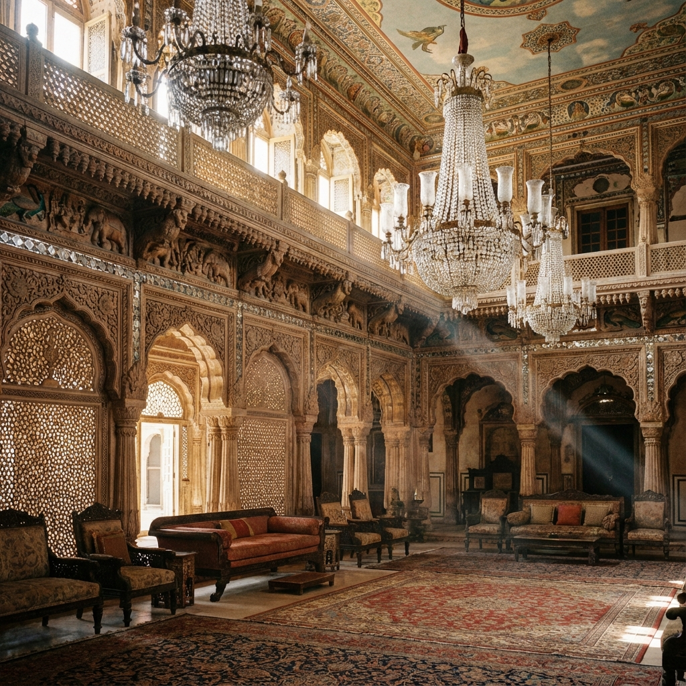
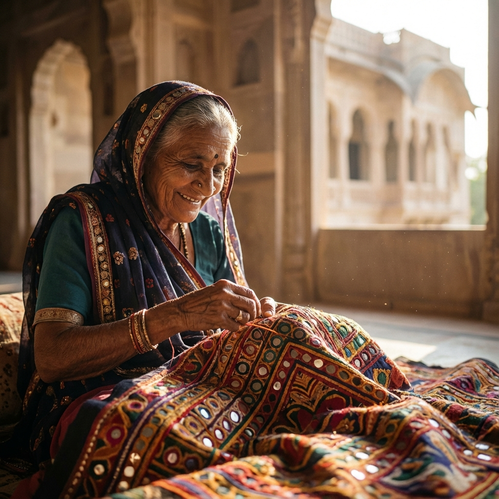

Why 'Kutch'?
The name **'Kutch'** is as unique as its landscape. Derived from the ancient Sanskrit word for a **tortoise**, it perfectly describes the turtle-like shape of this land as it emerges from the dampen Rann.
"A land that is damp, low-lying, and surrounded by water."
Centuries before it was called Kutch, the Greeks knew it as **Aabhir**, named after its original pastoral dwellers—the brave Aabhir tribes.


Cradle of Civilization
Before empires rose, Kutch was the heartbeat of the **Indus Valley Civilization**. In the salt-strewn plains of Khadir Bet, **Dholavira** stood as a marvel of ancient engineering—a sophisticated city of stone reservoirs and astronomical precision that matched the grandeur of Mesopotamia.

The Rajput Frontier
During the 8th century, the **Chavda Dynasty** held sway over the region, establishing powerful strongholds like **Kanthkot**. It was a time of epic resistance, where Kutch served as a strategic refuge for Rajput kings during the invasions of the Great Dynasties.
Migration of the 9 Lakhs
In a historic waves of migration, the **Samma Rajputs** crossed the Rann from Sindh. Legend tells of the **9 Lakh (900,000) Samma** tribesmen who arrived and transformed the social fabric of Kutch, eventually evolving into the ruling **Jadeja Dynasty** that defines Kutch today.

The Sovereign State
**Khengarji I** changed history by founding the capital of **Bhuj** and the strategic port of **Mandvi**. Kutch flourished as an autonomous state, striking its own silver currency (the **Kutch Kori**) and famously securing exemption from Mughal tribute in exchange for protecting pilgrims to Mecca.
A Princely Legacy
Under British suzerainty, the Maharaos of Kutch became master builders. **Pragmalji II** commissioned the Gothic Prag Mahal, while **Khengarji III** looked to the future, establishing the Kutch State Railway and the global gateway of **Kandla Port**.

Renewal & Resilience
From a separate Class-C state in independent India to becoming Gujarat's largest district, Kutch's modern history is one of incredible resilience. Despite the 2001 earthquake, the region has seen a miraculous revival, transforming itself into India's cultural crown jewel.